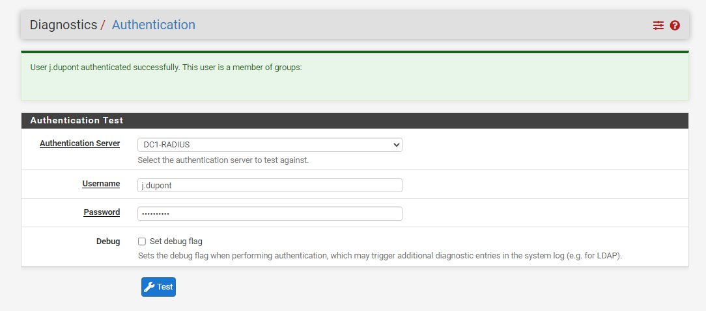
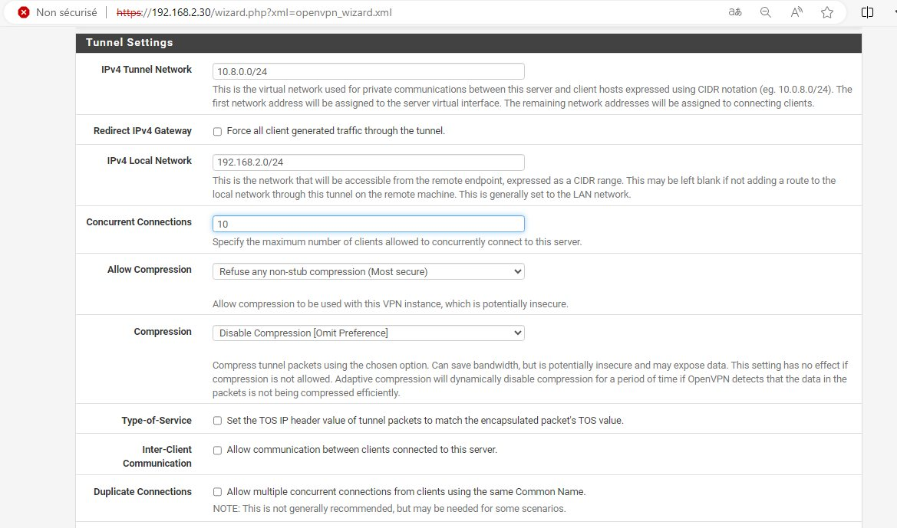
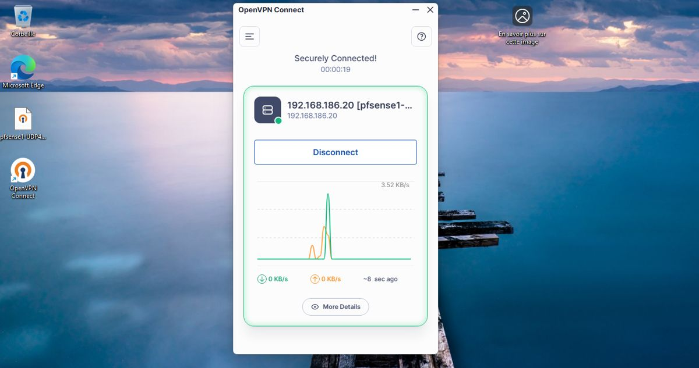

BTS · SISR
Accès distant OpenVPN avec RADIUS
Un VPN pour les nomades, avec authentification déléguée à l'Active Directory via RADIUS.
- OpenVPN
- pfSense
- NPS / RADIUS
- Active Directory
Contexte
Permettre l'accès aux ressources internes depuis l'extérieur, avec les comptes du domaine et un groupe dédié.
Résultat
Un utilisateur du groupe VPN ouvre un tunnel avec ses identifiants AD ; test depuis un poste externe réussi.
Étapes de réalisation
- NPS. Rôle NPS sur le contrôleur de domaine, serveur inscrit dans l'AD.
- Groupe. Groupe de sécurité dédié aux utilisateurs VPN.
- Client RADIUS. pfSense déclaré comme client, stratégie réseau limitée au groupe.
- pfSense. Serveur d'authentification RADIUS et test de communication.
- OpenVPN. Assistant, autorité de certification, certificat serveur, réseau de tunnel, règles automatiques.
- Client. Export du profil .ovpn, connexion depuis un poste externe.
Détail de chaque étape
Cliquez sur une étape pour ouvrir sa page détaillée
01Serveur RADIUS : rôle NPS et groupe VPNInstaller le rôle NPS sur le contrôleur de domaine, créer le groupe autorisé et inscrire le serveur dans l'annuaire.Lire cette étape →02Client RADIUS et stratégie réseauDéclarer pfSense comme client RADIUS puis limiter l'accès au groupe VPN.Lire cette étape →03pfSense : liaison RADIUS et testAjouter le serveur d'authentification dans pfSense et vérifier qu'un compte du domaine est reconnu.Lire cette étape →04Serveur OpenVPN avec l'assistantGénérer les certificats, définir le tunnel et laisser pfSense créer les règles de pare-feu.Lire cette étape →05Export du profil et connexion du clientExporter le fichier .ovpn et monter le tunnel depuis un poste extérieur.Lire cette étape →
Captures




Difficultés rencontrées
- En labo VMware, il faut désactiver le blocage des réseaux privés sur le WAN pour simuler une connexion distante.
Technologies utilisées
- VPN
- RADIUS
- Certificats
- Authentification centralisée